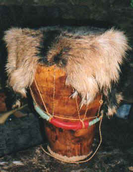
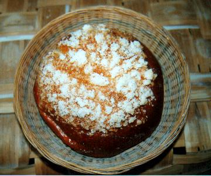
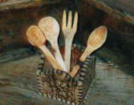
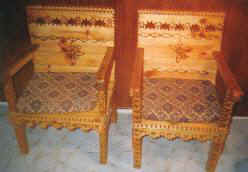
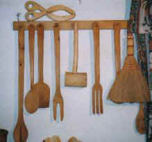

Luis Miguel Bautista Cervigón.
Trabaja artesanalmente el cuero, realiza carteras, pitilleras, pulseras, collares, bolsos, yambés...


Justo Jiménez Rubio.
Propietario de la panadería artesanal "Mary", elaboran los dulces típicos de la zona, además de pan artesanal.


Adrián García García.
Durante su tiempo libre elabora utensilios de madera, muebles, bustos...



Montserrat Sotoca Hernández.
Elaboración de queso artesanal